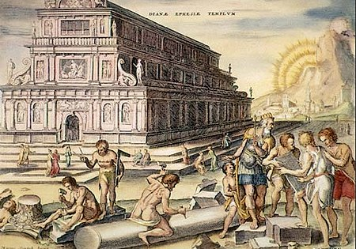

Artemidės šventykla – vienas iš septynių pasaulio stebuklų, stovėjusių Efese (dabartinė Turkija). Pagal legendą Efesą įkūrė amazonės – karingų moterų gentis. Paskutinė Artemidės šventykla jame buvo statoma daug kartų. Ankstyvieji mediniai statiniai pasenę suirdavo, sudegdavo arba sugriūdavo per žemės drebėjimus, todėl VI a. pr. m. e. viduryje buvo nutarta globėjai deivei Artemidei pastatyti didingą buveinę, negailint nei lėšų, nei laiko
